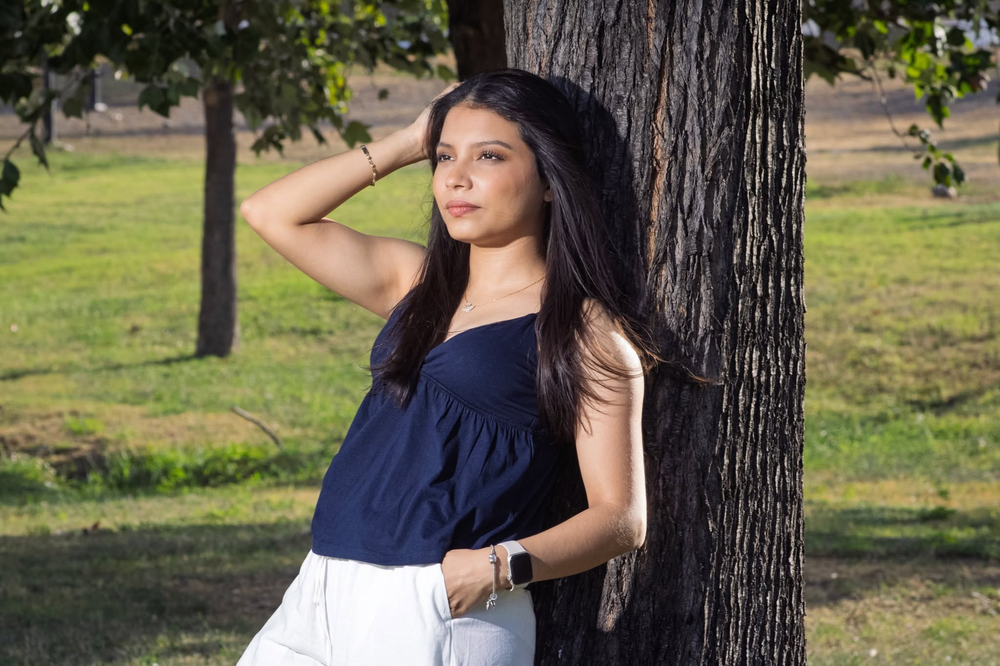

Retrato Editorial en Entorno Natural

Descripción del Proyecto
Fotografía de retrato con un enfoque editorial y natural. En esta toma se aprovechó la textura orgánica del árbol y la luz de la tarde para lograr un encuadre expresivo y equilibrado.
Detalles Técnicos:
- Categoría: Fotografía Editorial / Retrato
- Ubicación: Parque al aire libre con luz natural
- Edición: Gradación de color y contraste en Adobe Lightroom
- Composición: Encuadre lateral apoyado en sujeto natural